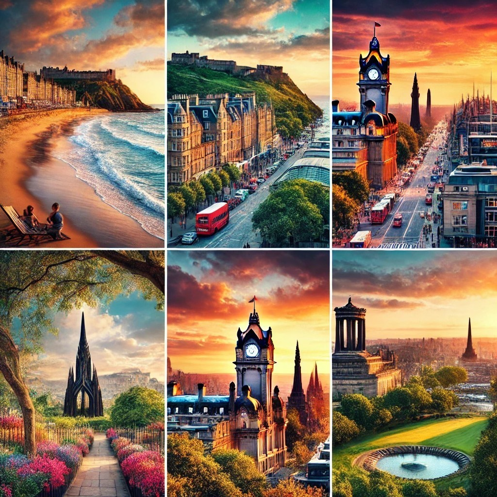

Discover Edinburgh
Explore the history, culture, and beauty of Edinburgh, Scotland's capital city.
Top Attractions
Edinburgh Castle

Arthur's Seat
Royal Mile
My Life in Edinburgh
I live in Edinburgh, a truly wonderful and safe city where people welcome everyone with open hearts. Edinburgh is a city of tolerance, diversity, and kindness, where you can feel at home no matter where you come from.
The city is blessed with a unique natural environment. It has the sea, a beautiful river, and majestic hills, including the famous Arthur's Seat. On sunny days, I love walking by the water or exploring the greenery of its parks, like Princes Street Gardens.
Edinburgh’s air is fresh, and its streets are filled with history, charm, and culture. The locals are warm and friendly, making it easy to connect with others. I am constantly inspired by the balance between the city's vibrant modern life and its rich historical roots.
Living here has been an incredible journey, and I feel grateful every day to call this city my home. Edinburgh is a place where nature, history, and culture come together to create a magical experience. I invite you to visit and see for yourself the beauty and harmony of this amazing city.